Le PC ne répond plus : il est peut-être en veille, éteint ou sans réseau, ou Tailscale est coupé sur ce téléphone. Spectre se reconnectera tout seul dès que le PC sera joignable.

Connexion…
Mémoire0faits
Validations0en attente
Missions0en cours
Cerveau—
Connexion…
Signal0,0 %
Actions en attente de ta validation
Spectre demande ton accord pour tout ce qui supprime, remplace, envoie ou touche au système.
Missions
Entreprise
Spectre t’aide à diriger tes entreprises. Chaque département est un poste où tu places un agent ; les tâches du tableau partent en mission avec le brief de leur poste, plusieurs à la fois. Une tâche finie mais pas entièrement vérifiée attend ta validation.
Tableau de bord
Sources, alertes et rapport
Spectre lit tes chiffres, sans jamais rien modifier : Stripe (une clé restreinte en lecture suffit), Supabase (comptage d’une table), la disponibilité de ton site, la CI GitHub ou n’importe quelle API JSON. Les clés restent sur ce PC, dans ~/.spectre/assistant/.env.
Conseil et expériences
Pour une décision importante, le conseil réunit les départements concernés ; la direction tranche, et la décision est réévaluée plus tard avec les vrais chiffres. Une expérience mesure une idée sur un indicateur, avec un verdict automatique.
Développement
Le département technique (l’agent du poste Produit et technique) code dans une branche isolée de ton dépôt, lance les tests, et ne pousse rien : c’est toi qui ouvres la PR.
Organigramme
Faire avancer l'entreprise
Réunions
Spectre écoute la réunion avec le micro du PC et la transcrit sur place, par morceaux de 30 secondes : le son n’est jamais gardé, seul le texte reste, et rien ne quitte le PC. À la fin, il fait le compte rendu ; avec une entreprise, les tâches vont à son tableau et les décisions à son journal. Préviens les participants que tu enregistres.
Automatisation
Ce que Spectre fait tout seul à heure fixe, ce que d’autres services lui signalent, et Spectre sur Telegram. Tu peux aussi lui demander : « chaque lundi à 9h, fais le point des ventes ».
Routines
Webhooks
Une adresse que GitHub, Stripe ou un autre service appelle quand il se passe quelque chose ; chaque appel est signé avec un secret, sinon il est refusé. Pour Stripe et GitHub, ce chemin doit être joignable depuis Internet : Tailscale Funnel sur le port 8443, jamais sur 443 (voir le README).
Notifications de cet appareil
Reçois les alertes, les comptes rendus et les validations en notification native, sur ce téléphone ou ce PC, même Spectre fermé. Les messages sont chiffrés pour cet appareil ; aucun service tiers ne les lit.
Telegram
Apprentissage
Après chaque mission réussie, Spectre se relit et peut te proposer une compétence : une méthode réutilisable (étapes, vérifications, pièges). Tu peux aussi lui en apprendre une : « retiens comment on prépare un devis ». Rien n’est enregistré sans ton accord ; les compétences inutilisées vieillissent puis sont archivées, jamais supprimées.
À valider
Compétences apprises
Archivées
L'équipe
Chaque agent, son département, l'outil et le modèle sur lesquels il travaille (les deux se changent ici), sa voix dans la visio, son dossier et ce qu'il coûte. Un agent passé sur un autre moteur garde son nom et sa spécialité.
Les agents de Spectre
Spectre dirige ; ses sous-agents exécutent et vérifient les missions. Il confie d'office le multimédia à Kyra et la cybersécurité à Syfer.
Moteurs
Chaque rôle tourne sur le moteur (LLM) de ton choix : Claude sur ton abonnement (opus, sonnet, haiku), ChatGPT, Mistral, un modèle local (LM Studio, Ollama : gratuit, rien ne quitte le PC) ou un service en ligne avec ta clé (OpenRouter, Groq, Gemini…), noté fournisseur:modèle. Si un moteur échoue ou atteint sa limite, Spectre passe aux moteurs de secours, dans l’ordre. Dans la conversation, tape /model ; pour un modèle absent des listes, /model fournisseur:modèle.
Dossiers et coûts
Chaque agent se construit un dossier : étapes vérifiées ou ratées, tâches que tu valides ou renvoies, actions refusées, missions annulées. Confirmé, il peut travailler seul sous pilote automatique ; expert, il remplace ou supprime des fichiers sans te demander (toujours annulable). Envoyer, payer ou installer demande toujours ton accord. S’il se trompe, il perd ces droits.
Agents créés
Spectre crée un agent quand tu le lui demandes, et c’est toi qui lui donnes son nom : s’il ne le connaît pas, il te le demande. Tu peux aussi le créer ici. Spectre lui confie ensuite les missions de son domaine.
Serveurs MCP
Branche à Spectre et à ses agents un serveur MCP (GitHub, Notion, une base de données, un navigateur…) : un programme lancé sur ce PC (npx, uvx, docker…) ou une adresse https. Leurs outils passent par le portail comme le reste : « lecture » s’utilise seul, « action » demande ta validation à chaque appel. Un jeton ou un mot de passe que tu tapes ici est rangé dans ~/.spectre/assistant/.env, jamais dans la fiche. Spectre peut aussi t’en proposer un : tu valides avant qu’il soit branché.
Rédaction
La chaîne qui écrit les textes soignés : recherche, rédaction, contrôle.
Ce que Spectre sait de toi
Initiatives
Rappels, briefing du matin, rapport de la nuit, missions terminées.
Journal des actions
Chaque action passe par le portail : niveau de risque, catégorie, décision.
Réglages de l'assistant
Visages connus
Spectre ne reconnaît que les personnes enregistrées ici, avec leur accord. Il ne garde aucune photo : seulement une empreinte numérique (128 nombres), sur ce PC, effaçable à tout moment.